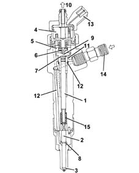
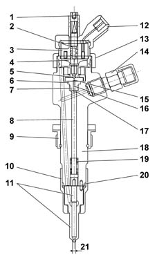
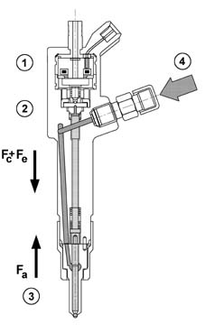
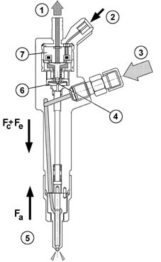
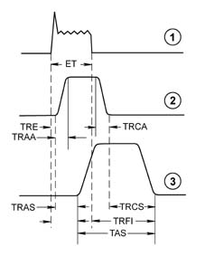

1060F injectors and lines
- Path
- Descriptions > 10 ENGINE UNIT > 1060 DIESEL FUEL INJECTION > 1060F injectors and lines
- Kind
- system description
- Applies to
- engines: 1.9 JTD 8V; all production periods
- Interactive page
- https://sloeber94.github.io/elrnDB-fMltpl/en/#/2888242
Applies to: engines: 1.9 JTD 8V; all production periods
INJECTOR
Construction features
Electromagnetically-controlled fuel injector divided into 2 parts:
- solenoid consisting of coils and drive valves
- actuator/nozzle consisting of a pressure rod, pin, 5-hole jet supplied at high pressure (up to 1300 bar with atmospheric pressure recirculation)

1, Pressure rod 2, Pin 3, Jet 4, Coil 5, Valve 6, Spherical shutter 7, Control area 8, Supply volume 9, Control volume 10, Fuel return - low pressure 11, Control duct 12, Supply duct 13, Electrical connection 14, Fuel inlet connector - high pressure 15, Spring
Operation
The electromagnetically-controlled UNIJET fuel injector comprises a high-pressure supply duct and a recirculation pipe at ambient pressure.
The supply duct is connected to the rail by a pipe which can withstand the high operating pressures; the recirculation is sent to the tank.
The chamber inside the pilot valve and immediately above the actuator is called "control chamber", and it of fundamental importance for the operation of the fuel injector.
Control chamber
The control chamber is a small chamber permanently supplied with line diesel through hole Z (from the German Zufluss = inlet).
The discharge from this chamber is through A (from the German Ablfuss = outlet), the opening of which is controlled by the control solenoid.
The diesel contained in the control chamber acts, at the supply pressure, on the upper surface of the pressure rod, with area Ac; the force Fc which acts on this area thus depends on the pressure Pc present in the control chamber.
Solenoid control valve
The control solenoid controls the pressure in the control chamber and so determines the instant when the actuator allows introduction of fuel to commence, and the duration of introduction.
The pressure in the control chamber is determined by the opening and closure of hole A, effected by a spherical shutter which is controlled by a pilot needle ("anchor").
The pilot needle is normally held in the closed position by a spring.
When the electromagnet is energized, the force of the spring is overcome and the pilot needle rises, allowing the spherical shutter to uncover the hole A; the lifting of the pilot needle is limited by a stop which is adjustable by an adjustment screw.
The nozzle is supplied with diesel under pressure when the pressure rod-pin assembly is in the raised position.
The pressure rod-pin assembly is subject to:
- a) the elastic force Fe in the direction of closure, generated by the spring which acts on the pin; this force ensures that the nozzle seals when the line pressure falls to zero, preventing fuel from dripping into the cylinder;
- b) the pressure Pc of the diesel (present in the control chamber), which acts on the upper area of the pressure rod Ac; this pressure Pc generates a force Fc, which also acts in the direction of closure;
- c) the pressure Pa of the diesel present in the supply chamber; this acts on the area Aa of the circular ring which is delimited on the outside by the diameter through which the pin slides in the nozzle, and on the inside by the diameter of the sealing edge of the conical seat. This pressure Pa generates a force Fa, in the direction of opening.

1, Adjustment screw 2, Spring 3, Electro-magnet 4, Keeper 5, Spherical shutter 6, Valve 7, Opening "Z" 8, Pressure rod 9, Ring nut (for fitting on engine cylinder head) 10, Retaining nut 11, Nozzle 12, Connector 13, Ring nut (for fitting on I.E. casing) 14, Connector 15, Opening "A" 16, Control chamber 17, "Ac" 18, Body 19, Spring (Fe) 20, Locating dowel
Injector rest position
In the rest condition, the electro-magnet is de-energized and the pilot needle is in the closed position.
In the control chamber supplied by the hole Z, the pressure Pc is equal to the line pressure, and so the forces which act in the direction of closure of the pressure rod-pintle assembly (Fc+Fe) prevail over the opening force (Fa).
Under these conditions, fuel is not inserted into the cylinder.

1, Electro-magnet 2. Two-way valve 3, Nozzle 4, High pressure diesel inlet
Start of injection
When the electromagnet is energized, the pilot needle rises and the hole A, whose discharge cross-section is greater than that of the hole Z, is uncovered. Consequently the diesel present in the control chamber is discharged, as a sufficient amount is not supplied through the hole Z, and the pressure Pc decreases.
The force Fc on the upper area of the pressure rod decreases and, when the opening force Fa becomes greater than Fc+Fe, the nozzle begins to open.
From the supply chamber, constantly refilled by the line pressure Pa, diesel begins to flow through the nozzle and the introduction of fuel into the cylinder commences.

1, Low pressure diesel recirculation 2, Electrical operation 3, High pressure diesel inlet 4, Flow hole open 5, Nozzle 6, Two-way valve 7, Electro-magnet
End of injection
The de-energizating of the electromagnet causes the hole A to close, which in turn causes the rapid increase in pressure in the control chamber to the original value, resulting in the re-balancing of the forces acting on the pressure rod-pin.
As a result of the re-balancing of the forces, the pressure rod and pin re-descend, stopping the influx of fuel to the nozzle and so ending injection.
For a better understanding of the stages described, refer to the following diagram:

1, Current 2, Pilot needle lift 3, Needle lift
a) A current is applied to the ends of the solenoid coil. This current is maintained for a time ET (Energizing Time), depending on the quantity of fuel to be injected and the supply pressure.
b) The movement of the soleniod valve pilot needle starts with a delay TRE (Energizing Delay Time) and the control chamber begins to empty.
c) The pilot needle homes at the top after a time TRAA (Pilot Needle Opening Delay Time), depending on the maximum lift, adjustable by means of a specific adjustment screw.
d) After a time TRAS (Pintle Opening Delay Time) from the start of the pilot needle's movement, the pressure rod-pin assembly starts its movement and at the same time injection commences; the time elapsing from the start of energization of the electromagnet is called TRII (Start-of-Injection Delay Time).
e) When the command to the electromagnet stops, the pilot needle starts its descent travel, which ends after a time TRCA (Pilot Needle Closure Delay Time), always dependent on the maximum lift permitted by the needle; when the pilot needle descends, the hole A closes and the control chamber fills up again.
f) When the pressures are re-balanced, the pressure rod-pin assembly re-descends, ending fuel injection. The following times may be distinguished: TRCS (Pintle Closing Delay Time), equal to the time elapsing between the closure of hole A and the end of injection; TAS (Pintle Opening Time), equal to the actual duration of injection, and TRFI (End-of-Injection Delay Time), calculated from the end of the electrical command.
Observations on the quantity introduced and the injection advance
The quantity of fuel introduced at each injection basically depends on two parameters: the duration of opening of the pintle and the pressure in the supply chamber.
As an initial approximation, it may be considered that the pressure in the supply chamber is equal to the line pressure; however, during injection, there is a slight reduction in pressure caused by the injection itself.
Since it is not possible to check and measure the pressure in the supply chamber, because of difficulties of access and the brevity of the time available, the injection pressure is assumed to be the pressure measured in the rail.
The length of the pintle opening depends on the duration of the electrical command ET (Energizing Time); in effect, the longer the duration of the electrical command, the longer the pilot needle remains in the open position and the longer the opening of the pintle.
The actual duration of injection cannot be immediately correlated to the duration of the electrical command (later, when reference is made to the duration of injection, the duration of the electrical command, or ET - Energizing Time - will be considered), and in general the actual duration of injection is greater than the duration of the electrical command, as the End-of-Injection Delay Time (TRFI) is greater that the Start-of-Injection Delay Time (TRII).
The delay between the start of the electrical command and actual injection (TRII) must be taken into account when considering the actual injection advance; in fact, for the injection advance, the UNIJET control system refers to the electrical command and not the actual start of injection.
The same considerations apply to the actual end of injection, whose delay from the end of the electrical command TRFI is greater than the start-of-fuel injection delay TRII.
TRII and TRFI can be determined by appropriate tests conducted on an injector test stand.
In conclusion, to know the quantity of air introduced at each injection, a test must be conducted to determine the "measured injector plan", i.e. the characteristic amount introduced in relation to ET at different injection pressures.